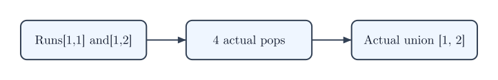
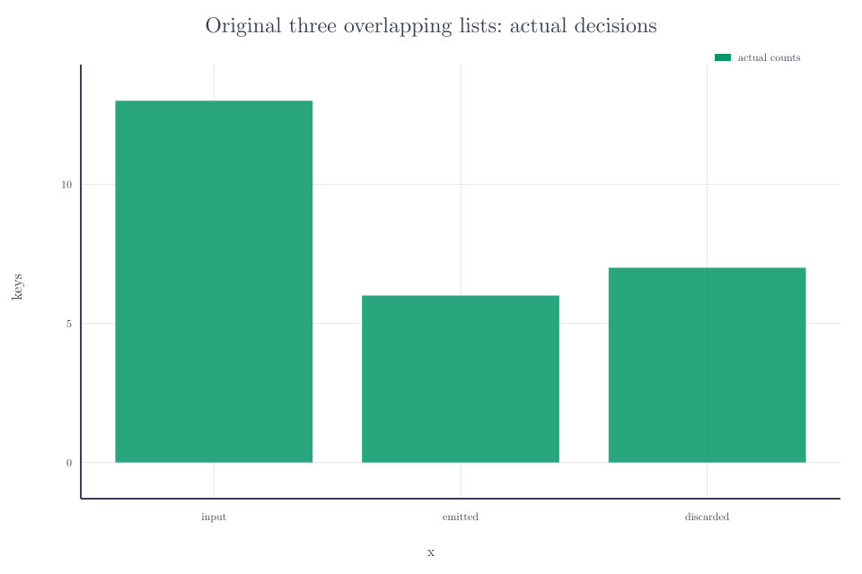
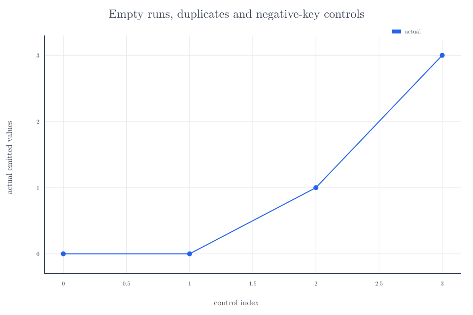
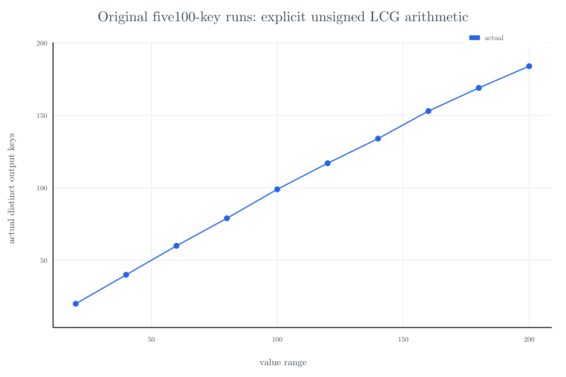

Union merge: actual duplicate-discard decisions
Abstract
Merging sorted lists while retaining each value once should preserve ordering and discard duplicate identities. A heap of current list fronts provides both the merged order and explicit emission decisions.
The method
The heap minimum is no larger than any unexposed element because each run is sorted. Emit a popped value only if it differs from the last output. Induction yields sorted set union. Every input identity is still pushed and popped once: deduplication shrinks output, not input traversal. For N keys over R nonempty runs, work is O(N log(R+1)) plus validation, with O(R) heap storage.
Simple worked example
#include <dm/dm.hpp>
int main() {
namespace a = dm::algorithms;
namespace g = dm::graphics;
std::filesystem::create_directories("build");
auto r = a::k_way_merge_trace({{1, 1}, {1, 2}}, true);
std::print("| popped value | list | input index | emitted |\n|---:|---:|---:|---|\n");
for (auto q : r.steps)
if (q.kind == a::MergeHeapKind::Pop)
std::print("|{}|{}|{}|{}|\n", q.value, q.list, q.index, q.emitted);
g::Diagram concept_diagram(48, 1100);
concept_diagram.node("n0", {0, 0}, "Runs[1,1] and[1,2]");
concept_diagram.node("n1", {5, 0},
std::format("{} actual pops", r.work.pops));
concept_diagram.node("n2", {10, 0}, std::format("Actual union {}", r.values));
concept_diagram.edge("n0", "n1").edge("n1", "n2");
concept_diagram.save_svg("build/union_merge_tiny.svg");
}| popped value | list | input index | emitted |
|---|---|---|---|
| 1 | 0 | 0 | true |
| 1 | 0 | 1 | false |
| 1 | 1 | 0 | false |
| 2 | 1 | 1 | true |

The retained original experiment
#include <dm/dm.hpp>
int main() {
namespace a = dm::algorithms;
namespace g = dm::graphics;
std::filesystem::create_directories("build");
auto r =
a::k_way_merge_analyze({{1, 2, 2, 3, 5}, {2, 3, 4, 5}, {3, 5, 5, 6}},
true);
std::print("| input keys | actual union | emitted | duplicates discarded " "|\n|---:|---|---:|---:|\n|{}|`{}`|{}|{}|\n",
r.work.input_values, r.values, r.work.emitted,
r.work.discarded_duplicates);
auto p =
g::RPlot::barplot({double(r.work.input_values), double(r.work.emitted),
double(r.work.discarded_duplicates)},
{"input", "emitted", "discarded"}, "actual counts",
{5, 150, 105});
p.title("Original three overlapping lists: actual decisions").y_label(
"keys");
p.save_svg("build/union_merge_original.svg");
}| input keys | actual union | emitted | duplicates discarded |
|---|---|---|---|
| 13 | [1, 2, 3, 4, 5, 6] | 6 | 7 |

Checking the theory and controls
#include <dm/dm.hpp>
int main() {
namespace a = dm::algorithms;
namespace g = dm::graphics;
std::filesystem::create_directories("build");
std::vector<double> x, y;
std::print("| runs | actual union | pops |\n|---|---|---:|\n");
int i = 0;
for (auto lists : std::vector<std::vector<std::vector<int>> >{
{}, {{}}, {{1, 1}, {1}}, {{-2, 0}, {-2, 3}}
}) {
auto r = a::k_way_merge_analyze(lists, true);
std::print("|`{}`|`{}`|{}|\n", lists, r.values, r.work.pops);
x.push_back(i++);
y.push_back(r.work.emitted);
}
auto p = g::RPlot::create();
p.line(x, y, "actual", {37, 99, 235}, 2);
p.points(x, y, "", {37, 99, 235}, 5);
p.title("Empty runs, duplicates and negative-key controls").x_label(
"control index").y_label("actual emitted values");
p.save_svg("build/union_merge_controls.svg");
}| runs | actual union | pops |
|---|---|---|
[] | [] | 0 |
[[]] | [] | 0 |
[[1, 1], [1]] | [1] | 3 |
[[-2, 0], [-2, 3]] | [-2, 0, 3] | 4 |

Sensitivity and selected work
#include <dm/dm.hpp>
int main() {
namespace a = dm::algorithms;
namespace g = dm::graphics;
std::filesystem::create_directories("build");
std::vector<double> x, y;
std::print("| range | input | actual distinct | pops | comparator calls " "|\n|---:|---:|---:|---:|---:|\n");
for (int range = 200; range >= 20; range -= 20) {
auto lists = a::union_overlap_lists(range);
auto r = a::k_way_merge_analyze(lists, true);
std::print("|{}|{}|{}|{}|{}|\n", range, r.work.input_values,
r.values.size(), r.work.pops, r.work.node_comparisons);
x.push_back(range);
y.push_back(r.values.size());
}
auto p = g::RPlot::create();
p.line(x, y, "actual", {37, 99, 235}, 2);
p.points(x, y, "", {37, 99, 235}, 5);
p.title("Original five100-key runs: explicit unsigned LCG arithmetic").x_label("value range").y_label("actual distinct output keys");
p.save_svg("build/union_merge_work.svg");
}| range | input | actual distinct | pops | comparator calls |
|---|---|---|---|---|
| 200 | 500 | 184 | 500 | 2010 |
| 180 | 500 | 169 | 500 | 2008 |
| 160 | 500 | 153 | 500 | 1967 |
| 140 | 500 | 134 | 500 | 1996 |
| 120 | 500 | 117 | 500 | 2023 |
| 100 | 500 | 99 | 500 | 2027 |
| 80 | 500 | 79 | 500 | 2012 |
| 60 | 500 | 60 | 500 | 2087 |
| 40 | 500 | 40 | 500 | 2116 |
| 20 | 500 | 20 | 500 | 2254 |

Interpretation and limits
The shared native merge producer supplies actual trace events; no report loop reconstructs the heap. The original overlap generator used signed overflowing LCG arithmetic. Its intended modulo2^31 recurrence now uses explicit unsigned arithmetic; modulo sampling remains biased.
The complete editable C++ programs save figures locally; results contain ordinary computed Markdown. Selected counters describe actual producer operations, excluding validation when stated.
References
The recurrence and proof above derive the implemented behavior.
Verified in the shared ten-document batch: 84 scoped native cases;20 directly
instrumented ASan/UBSan cases;45 executable public examples;127/127 definitions
across12 full scopes;10 hovers;2400 independent records/9344 checks;9 frozen
valid-input families plus the unchanged shared merge producer;11
checkout/installed standalone headers and linked ten-family consumer;40 executed
programs and40 inspected figures with both exports. Receipts:
build/mepml-conversion/batch-414-423/.